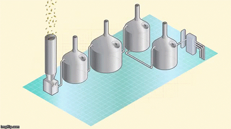
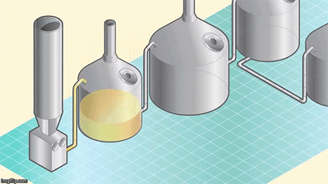
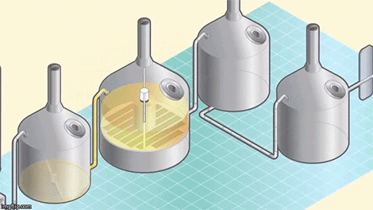
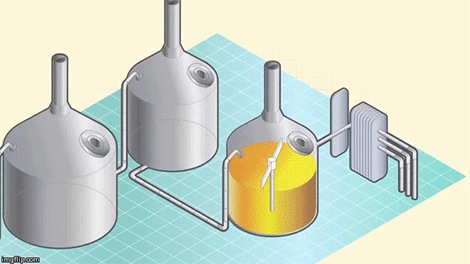
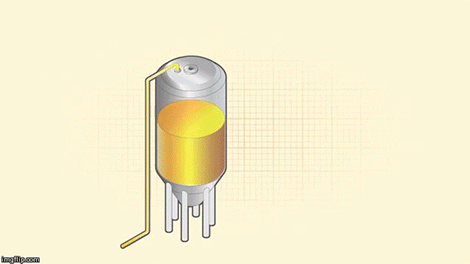
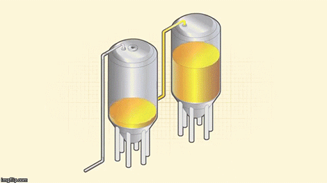
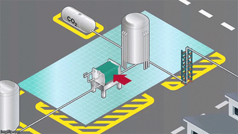

"Give a man a beer, waste an hour. Teach a man to brew, and waste a lifetime!"
-Bill Owen-Step 1: Milling the grain
Beginning In the brew house, different types of malt are crushed together to break up the grain kernels in order to extract fermentable sugars to produce a milled product called grist.
Step 2: Mash Conversion
The grist is then transferred into a mash tun, where it is mixed with heated water in a process called mash conversion. The conversion process uses natural enzymes in the malt to break the malt’s starch down into sugars.
Step 3: Lautering
The mash is then pumped into the lauter tun, where a sweet liquid (known as wort) is separated from the grain husks.
Step 4: The Boil
The wort is then collected in a vessel called a kettle, where it is brought to a controlled boil before the hops are added.
Step 5: Wort separation and cooling
After boiling, the wort is transferred into a whirlpool for the wort separation stage. During this stage, any malt or hop particles are removed to leave a liquid that is ready to be cooled and fermented.
Step 6: Fermentation
To start the fermentation, yeast is added during the filling of the vessel. Yeast converts the sugary wort into beer by producing alcohol, a wide range of flavors, and carbon dioxide (used later in the process to give the beer its sparkle).
Step 7: Maturation
After fermentation, the young “green” beer needs to be matured in order to allow both a full development of flavors and a smooth finish.
Step 8: Filtration, carbonation, and cellaring
After reaching its full potential, the beer is filtered, carbonated, and transferred to the bright beer tank, where it goes through a cellaring process that takes 3-4 weeks to complete. Once completed, the beer is ready to be packaged (and that’s a whole other fascinating process explained in the video).